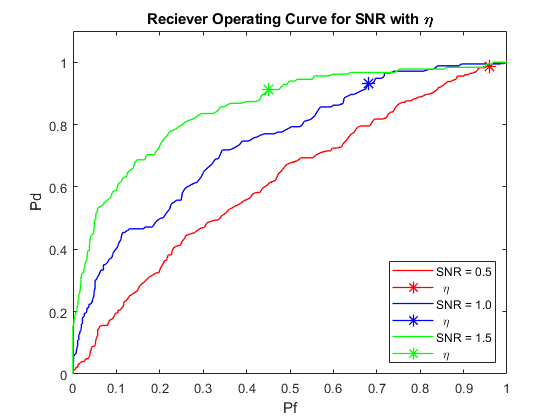
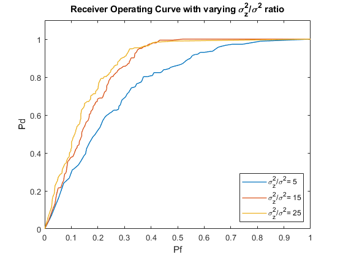
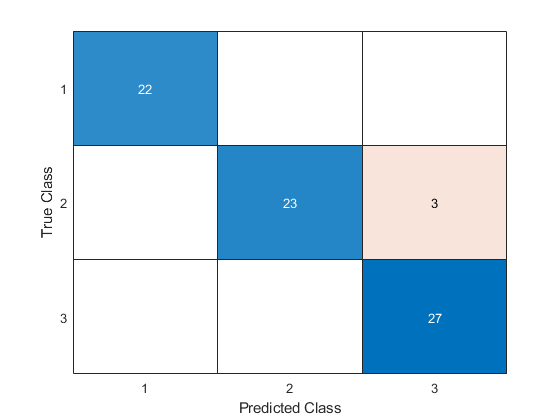

Contents
clc;
clear;
close all;
Question 1
fprintf('Question 1 \n\n');
p0 = 0.8;
p1 = 0.2;
A_const = 1;
N = 1000;
var = 1;
sigmax = sqrt(var);
A = double(~logical((randi(5, N, 1))-1));
X = normrnd(0, sigmax, [N, 1]);
Y = A + X;
threshold = (A_const / 2) + ((sigmax^2 / A_const) * log(p0 / p1));
Exp_Error = sum((Y > threshold) ~= A) / N;
Theo_Error = p0 * (1 - normcdf(threshold, 0, sigmax)) + p1 * normcdf(threshold, A_const, sigmax);
fprintf('a)\nTheoretical Error: %0.4f \nExperimental Error: %0.4f\n', Theo_Error,Exp_Error);
fprintf('c) \n');
SNR = [0.5, 1, 1.5];
threshold_test = linspace(-10, 10, 1000);
pf = zeros(1000, 3);
Pd = zeros(1000, 3);
for i = 1:3
A_const = var * SNR(i);
A = A_const* double(~logical((randi(5, N, 1))-1));
Y = A + X;
threshold = (A_const / 2) + ((sigmax^2 / A_const) * log(p0 / (p1*10)));
fprintf('Threshold value for SNR(%0.1f)if missing target is 10 times worse: %0.4f \n',SNR(i),threshold);
for x = 1:1000
F10(i) = sum((Y > threshold) & (A ~= A_const)) / sum((A == 0));
D10(i) = sum((Y > threshold) & (A == A_const)) / sum((A == A_const));
Pf(x,i) = sum((Y > threshold_test(x)) & (A ~= A_const)) / sum((A == 0));
Pd(x,i) = sum((Y > threshold_test(x)) & (A == A_const)) / sum((A == A_const));
end
end
figure;
set(groot,'defaultLineMarkerSize',10);
plot(Pf(:,1), Pd(:,1), '-r', F10(1), D10(1), '-r*',...
Pf(:,2), Pd(:,2), '-b', F10(2), D10(2), '-b*',...
Pf(:,3), Pd(:,3), '-g', F10(3), D10(3), '-g*', 'linewidth', 1);
xlabel('Pf');
ylabel('Pd');
title('Reciever Operating Curve for SNR with \eta')
legend("SNR = 0.5", " \eta ","SNR = 1.0", " \eta ","SNR = 1.5", " \eta ", 'Location', 'southeast');
xlim([0 1.0]);
ylim([0 1.1]);
var_x = 1;
var_z = 25;
sigma_x = sqrt(var_x);
sigma_z = sqrt(var_z);
A = double(~logical((randi(5, N, 1))-1));
X = normrnd(0, sigma_x, [N, 1]);
Z = normrnd(0, sigma_z, [N, 1]);
Y = A + (X .* A) + (Z .* (~A));
threshold = 2 * ((sigma_x^2 * sigma_z^2) / (sigma_z^2 - sigma_x^2)) * log((p1 * sigma_z) / (p0 * sigma_x));
p01 = 2 * (1 - normcdf(threshold, 0, sigma_x));
p10 = normcdf(threshold, 0, sigma_z) - normcdf(-threshold, 0, sigma_z);
theo_error = p10 * p0 + p01 * p1;
exp_error = sum((imag(Y) ~= 0) ~= (A == 1)) / N;
fprintf('\ne)\nTheoretical Probability of Error: %.3f\n', theo_error);
fprintf('Experimental Probability of Error: %.3f\n', exp_error);
var_z = [5, 15, 25];
sigma_z = sqrt(var_z);
ratio = zeros(3, 1, N);
n = linspace(-5,3,N);
pf = zeros(3, 1, N);
pd = zeros(3, 1, N);
for i = 1:3
A = double(~logical((randi(5, N, 1))-1));
X = normrnd(0, sigma_x, [N, 1]);
Z = normrnd(0, sigma_z(i), [N, 1]);
Y = A + (X .* A) + (Z .* (~A));
pf(i,:,:) = sum(and((p1 * (1/sqrt(var_x *2*pi)) * exp(-((Y - A_const).^2) / (2 * var_x))) >= ...
(p0*(1/sqrt(var_z(i)*2*pi)) * exp(-((Y-A_const).^2)/(2*var_z(i))))*n, ~A))/sum(~A);
pd(i,:,:) = sum(and((p1 * (1/sqrt(var_x *2*pi)) * exp(-((Y - A_const).^2) / (2 * var_x))) >= ...
(p0*(1/sqrt(var_z(i)*2*pi)) * exp(-((Y-A_const).^2)/(2*var_z(i))))*n, A))/sum(A);
ratio(i) = var_z(i) / var_x;
end
figure;
plot(reshape(pf(1, :, :), [1,N]), reshape(pd(1, :, :), [1,N]),...
reshape(pf(2, :, :), [1,N]), reshape(pd(2, :, :), [1,N]),...
reshape(pf(3, :, :), [1,N]), reshape(pd(3, :, :), [1,N]),'linewidth', 1);
xlabel('Pf')
ylabel('Pd')
title('Receiver Operating Curve with varying \sigma_z^2/\sigma^2 ratio')
xlim([0 1.0]);
ylim([0 1.1]);
legend(['\sigma_z^2/\sigma^2= ',num2str(ratio(1))],['\sigma_z^2/\sigma^2= ',num2str(ratio(2))],...
['\sigma_z^2/\sigma^2= ',num2str(ratio(3))], 'Location', 'southeast');
Question 1
a)
Theoretical Error: 0.1862
Experimental Error: 0.1770
c)
Threshold value for SNR(0.5)if missing target is 10 times worse: -1.5826
Threshold value for SNR(1.0)if missing target is 10 times worse: -0.4163
Threshold value for SNR(1.5)if missing target is 10 times worse: 0.1391
e)
Theoretical Probability of Error: 0.188
Experimental Probability of Error: 0.194
 
Question 2
data = load('Iris.mat');
numOfSamples = size(data.features, 1);
half = numOfSamples/2;
shuffled = randperm(size(data.features, 1));
shuffled_features = data.features(shuffled, :);
shuffled_labels = data.labels(shuffled, :);
train_features = shuffled_features(1:half, :);
train_labels = shuffled_labels(1:half);
test_features = shuffled_features(half+1:numOfSamples, :);
test_labels = shuffled_labels(half+1:numOfSamples);
Cat1 = train_features(train_labels == 1, :);
Cat2 = train_features(train_labels == 2, :);
Cat3 = train_features(train_labels == 3, :);
m1 = [mean(Cat1(:, 1)), mean(Cat1(:, 2)), mean(Cat1(:, 3)), mean(Cat1(:, 4))];
m2 = [mean(Cat2(:, 1)), mean(Cat2(:, 2)), mean(Cat2(:, 3)), mean(Cat2(:, 4))];
m3 = [mean(Cat3(:, 1)), mean(Cat3(:, 2)), mean(Cat3(:, 3)), mean(Cat3(:, 4))];
cov1 = cov(Cat1);
cov2 = cov(Cat2);
cov3 = cov(Cat3);
likelihood = [mvnpdf(test_features, m1, cov1),mvnpdf(test_features, m2, cov2),mvnpdf(test_features, m3, cov3)];
[~, output] = max(likelihood, [], 2);
error = 1- mean(output == test_labels);
fprintf('\n\nQuestion 2 \n\nTotal Probability of Error: %0.4f', error);
figure;
confusionchart(confusionmat(test_labels, output));
Question 2
Total Probability of Error: 0.0400
